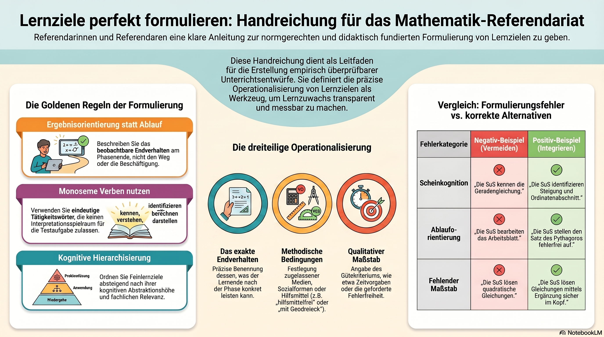

Lernziele formulieren, die messbar sind
Ein gelungenes Lernzielgefüge steuert Ihren Unterricht transparent und macht den Lernzuwachs empirisch überprüfbar. Diese Handreichung zeigt, wie Sie Schwerpunkt- und Feinlernziele normgerecht und didaktisch fundiert formulieren.
Der Leitfaden auf einen Blick
Vom vagen Tätigkeitssatz zum überprüfbaren Endverhalten – die wichtigsten Regeln als Infografik.

Video-Überblick: „Perfekte Lernziele in Mathematik" – kompakte Einführung in Schwerpunkt- und Feinlernziele und ihre Operationalisierung.
1Handlungsrichtlinien: Gebote und Verbote
Die entscheidende Grenze verläuft zwischen dem messbaren Produkt des Lernens und der bloßen Beschreibung des Unterrichtsablaufs. Lernziele beschreiben das beobachtbare Endverhalten – nicht den Weg dorthin.
✔ Gebote – das müssen Sie tun
- Ergebnisorientiert formulieren: das beobachtbare Verhalten am Ende der Stunde (Schwerpunktziel) bzw. nach der Teilphase (Feinlernziele) präzise beschreiben.
- Dreiteilig operationalisieren: jedes Feinlernziel nennt das exakte Endverhalten, die methodischen Bedingungen (Medien, Sozialform) und den qualitativen/ quantitativen Maßstab.
- Nach fachlicher Relevanz hierarchisieren: absteigend nach kognitiver Abstraktionshöhe – konzeptueller Erkenntnisgewinn vor reproduktiver Ausführung vor handwerklicher Zubringerhandlung.
- Monoseme Verben nutzen: Tätigkeitswörter, aus denen sich ohne Spielraum direkt eine eindeutige Testaufgabe ableiten lässt.
✘ Verbote – das müssen Sie vermeiden
- Keine reinen Ablaufbeschreibungen: nicht, was die SuS während der Stunde tun oder welches Arbeitsblatt sie bearbeiten. Lernziele beschreiben das Produkt, nicht den Prozess.
- Keine Scheinkognitionen: Wörter wie kennen, wissen, verstehen, erfassen beschreiben innere, nicht beobachtbare Zustände – im Unterrichtsbesuch nicht messbar und daher unzulässig.
- Keine chronologischen Aufzählungen: eine lineare Reihung entlang des Stundenrasters verleitet zu Beschäftigungsbeschreibungen; die fachliche Tiefenstruktur geht verloren.
2Die Formulierungs- und Prüfmatrix
Drei typische Fehlerkategorien – und wie aus jedem Negativ-Beispiel ein überprüfbares Lernziel wird.
| Fehlerkategorie | Negativ-Beispiel (vermeiden) | Didaktische Begründung | Positiv-Beispiel (integrieren) |
|---|---|---|---|
| Ablauf- statt Ergebnisorientierung | „Die SuS bearbeiten kooperativ das Arbeitsblatt zum Satz des Pythagoras." | Beschreibt die Aktivität während der Erarbeitung, nicht das messbare Endverhalten nach dem Lernprozess. | „Die SuS stellen den Satz des Pythagoras für konkrete geometrische Konstellationen fehlerfrei auf." |
| Scheinkognition (vage Begriffe) | „Die SuS kennen die allgemeine Geradengleichung y = mx + n." | Der Zustand des „Kennens" entzieht sich der direkten Beobachtung und ist nicht operationalisierbar. | „Die SuS identifizieren Steigung und Ordinatenabschnitt in vorgegebenen Funktionsgleichungen." |
| Fehlende Bedingung / Maßstab | „Die SuS lösen quadratische Gleichungen." | Der Kontext (mit GTR, Näherungsverfahren oder algebraisch) sowie das geforderte Gütekriterium fehlen komplett. | „Die SuS lösen einfache quadratische Gleichungen mittels quadratischer Ergänzung im Kopf sicher und fehlerfrei." |
3Praxisbeispiel: Einführung „Satz des Pythagoras"
Kommentiertes Schwerpunktziel (Makro-Ebene). Es benennt Kontext, Lernzuwachs, Bedingung, Endverhalten und Validierung in einem Satz:
Die Schülerinnen und Schüler entdecken im Kontext der Problemfrage zum Grundstückstausch selbstständig die Flächenbeziehung im rechtwinkligen Dreieck. Sie sind am Ende der Stunde in der Lage, unter Verwendung geometrischer Legematerialien den Satz des Pythagoras für diesen konkreten Fall fehlerfrei aufzustellen, um die Einstiegsproblemfrage kriteriengeleitet zu beantworten – und legen damit das Fundament, um in Folgestunden unbekannte Seitenlängen exakt zu berechnen.
Operationalisierte Feinlernziele (Mikro-Ebene) – nach fachlicher Relevanz hierarchisiert, vom konzeptuellen Kern bis zur enaktiven Zubringerhandlung:
| Feinlernziel & Relevanz | Operationalisierte Formulierung | Didaktische Begründung |
|---|---|---|
| FZ 1 — Symbolisierung & Formalisierung höchste Relevanz |
Die Lernenden notieren den Satz des Pythagoras (a² + b² = c²) hilfsmittelfrei an der Tafel in mathematischer Standardform, bezogen auf den rechten Winkel. | Höchste Abstraktionsstufe (ikonisch → symbolisch); bildet den mathematischen Kern der Stunde. |
| FZ 2 — Mustererkennung & Termaufstellung hohe Relevanz |
Die Lernenden formulieren die quantitative Beziehung zwischen den drei Quadratflächen (A₁ + A₂ = A₃) selbstständig in Partnerarbeit als korrekte Summen-Gleichung. | Konzeptuelle Einsicht in die relationale Struktur; logische Voraussetzung für die algebraische Notation. |
| FZ 3 — Validierung & Transfer mittlere Relevanz |
Die Lernenden entscheiden über die Gültigkeit der Formel für ein verändertes, nicht-gleichschenkliges rechtwinkliges Dreieck (Geodreieck zur Verifizierung) sicher und fehlerfrei innerhalb von 3 Minuten. | Sichert die Allgemeingültigkeit des Satzes und trennt ihn vom konkreten Einstiegsbeispiel. |
| FZ 4 — Geometrische Repräsentation nachgeordnete Relevanz |
Die Lernenden übertragen die Quadrate über Katheten und Hypotenuse mit Legematerialien (Einheitsquadrate) vollständig und flächendeckend in ein abstraktes geometrisches Modell. | Enaktive Basis- und Zubringerhandlung; didaktisch notwendig, aber geringste Abstraktionstiefe. |
Abschluss-Check vor der Abgabe
Gehen Sie Ihren Entwurf noch einmal durch: Haben Sie die mathematische Formatierung durchgängig gewahrt? Ist bei jedem Feinlernziel die Dreiteilung (Endverhalten · Bedingungen · Maßstab) lückenlos erkennbar? Liegt Ihrer Reihenfolge die fachdidaktische Tiefe zugrunde?